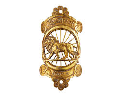
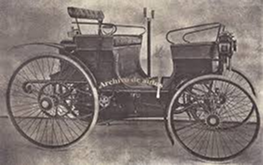
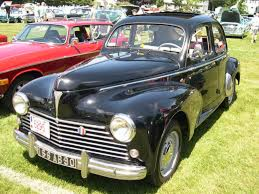
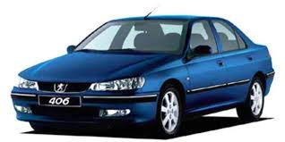

Historia de Peugeot
La historia de Peugeot comenzó mucho antes de fabricar autos. En 1810, los hermanos Jean-Pierre y Jean-Frédéric Peugeot transformaron el molino de su familia, en la región de Sochaux, Francia, en una fábrica metalúrgica. En sus inicios producían herramientas, sierras, molinillos de café, bicicletas y objetos de acero. El símbolo del león, que más tarde se convertiría en el emblema de la marca, apareció en 1858, representando la fuerza, flexibilidad y durabilidad de sus productos. A fines del siglo XIX, la familia Peugeot comenzó a interesarse por el desarrollo de vehículos motorizados, primero con triciclos a vapor y luego con automóviles de combustión interna.
Durante las primeras décadas del siglo XX, Peugeot se consolidó como pionera en la industria automotriz francesa. Participó en las primeras carreras de autos, ganando prestigio por su ingeniería y confiabilidad. El modelo Peugeot Type 3 fue uno de los primeros autos en circular por caminos europeos, y en 1895 completó un viaje histórico desde París hasta Brest, demostrando su resistencia y fiabilidad. A lo largo de los años 20 y 30, Peugeot introdujo innovaciones en el diseño y amplió su gama de modelos. Sin embargo, la Segunda Guerra Mundial afectó gravemente su producción: la fábrica de Sochaux fue ocupada y obligada a fabricar vehículos militares.
En la posguerra, Peugeot lanzó modelos que marcaron una época, como el Peugeot 203 (1948), el primer auto de la marca completamente nuevo tras la guerra, y el Peugeot 404 (1960), reconocido por su elegancia y fiabilidad. Durante las décadas de 1960 y 1970, Peugeot se expandió internacionalmente y comenzó a exportar a América Latina, África y Asia.
Durante los años 90, Peugeot vivió una etapa de modernización. El Peugeot 106, 306 y 406 introdujeron nuevas líneas de diseño y mejoras en seguridad. En 1998, el Peugeot 206 se convirtió en un éxito mundial, con más de 8 millones de unidades vendidas, y su versión de rally dominó las competencias de la década del 2000.